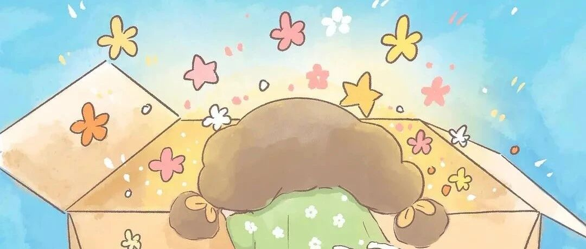

对小部分人有用的宝藏App
点击关注秋秋很开心

大家好，我是秋秋～
好久不见，你们有没有想我啊（很自恋哈哈哈）
这几天，我发现了几个高质量APP，简直打开我新世界大门啊！
真的，对你的学习、生活，会很有帮助～
1、弹幕记忆
我一发在抖音，就快百万播放。

你也能看到单词！

好嘛，自从有了它，感觉我看视频更“心安理得”了......
不过这个确实还真有用，你看多了，脑子不自觉的就会进行记忆～
尤其我这种，一天就设置10个单词，不知不觉就记住了。

里面单词书也很全面，像中考、高考、大学四六级、考研词汇都有，你可以根据需要进行选择～

当然弹幕颜色、速度你也可以自由设置。
潜移默化记单词，这个真的是碎片化学习小神器～
不过有个缺点，目前只能安卓手机下载，苹果的等我再去研究一下。
2、使命闹钟

我绝对不会说，过完国庆假期我又要调整作息了。
这个闹钟，就特别适合我这种赖床症患者～
真的！就是起床困难症必备闹钟！有了它，我保证你头天晚上复习到12点，第二天也能6点钟起床。

主要这个里面是有很多有趣的起床方法。像我摇手机100下，直接清醒了：

还有做题、走路、拍照才能暂停闹钟的模式。
比如做题，闹钟响了你想关闭，那就要给出答案，有那个时间计算，真的早就清醒了。

拍照、扫描二维码那种，你可以把它设置成洗面奶或牙膏的图案，只有起床走到洗手间才能关闭，这样起床再也不困难。
我觉得这个闹钟就适合单纯因为懒不想起床的。
就像我，一到冬天就赖床，明明睡够8小时还不起，就得靠它了。
3、学习强国

没想到啊没想到～本来是学校安利上马原的，现在成为我的学习神器。
不用会员！没有广告！全部高清！
这个宝藏App看视频，真的一绝：

觉醒年代、家有儿女、父母爱情、白夜追凶，四大名著高清版全都有，免费看完全没广告。

学习上，还有名牌大学慕课，清华北大课程在家就能听。

学技能，五子棋、剪纸、围棋、画画全都免费，手机ipad都能看。

关键在这里我找到了童年，那些小时候看的动画片：大脑天宫、小蝌蚪找妈妈、哪吒脑海，竟然都还有高清版～

我还会用它听各种音乐广播，还有一些考公党用它看学习资料，真的全能啊非常nice~
4、桌面便签

之前我为了打印，自己做了好多系列的便签纸。
最近我发现，这不用我做了，这个App就自带啊～
里面很多韩系小清新风格，看起来很舒服。

而且可以放在手机桌面上，这样的提醒每天看着，感觉很有动力。


所有的颜色、大小、字体，你都可以自己调节。
缺点就是不能打印出来，不过在手机里用已经非常不错了。
🪐
最后，其实App就是能让我们生活的更好。
如果你因为它很可爱、或者哪怕很好玩，而下载使用，最后对你的生活、效率有正向影响，那我觉得就很值得。
另外，给大家说一下，我发现几个非常有效告别手机上瘾的小妙招！
先卖个关子，下期写啦～